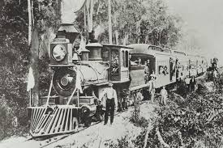
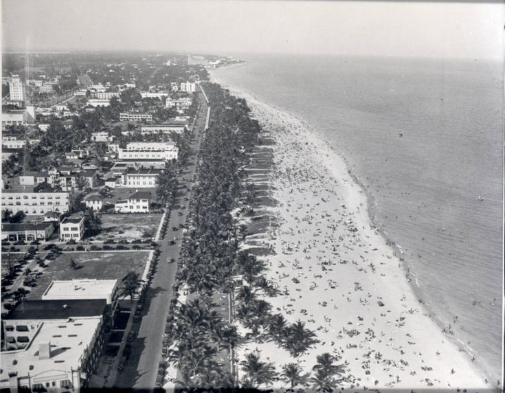
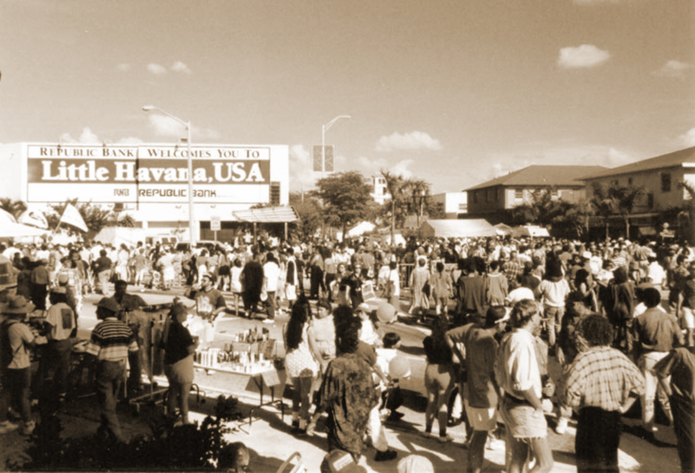
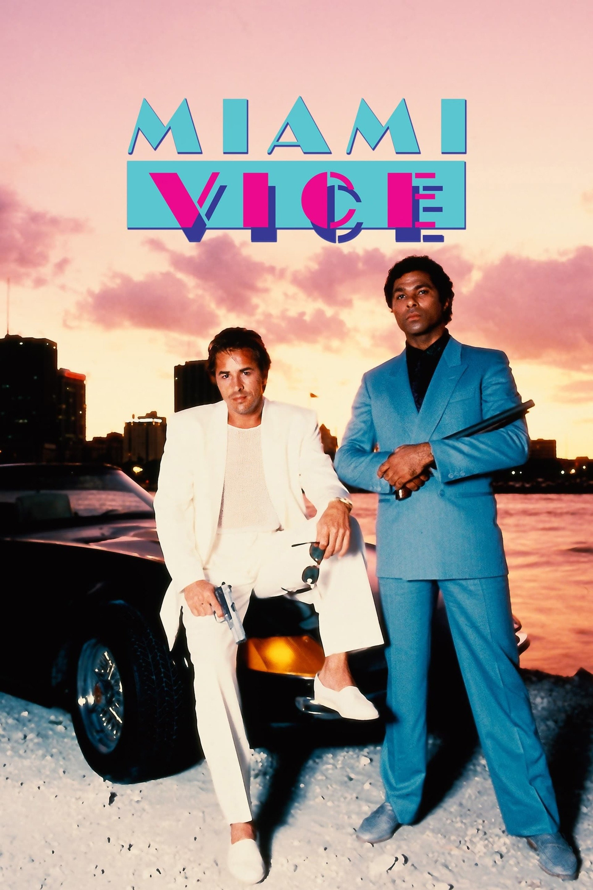
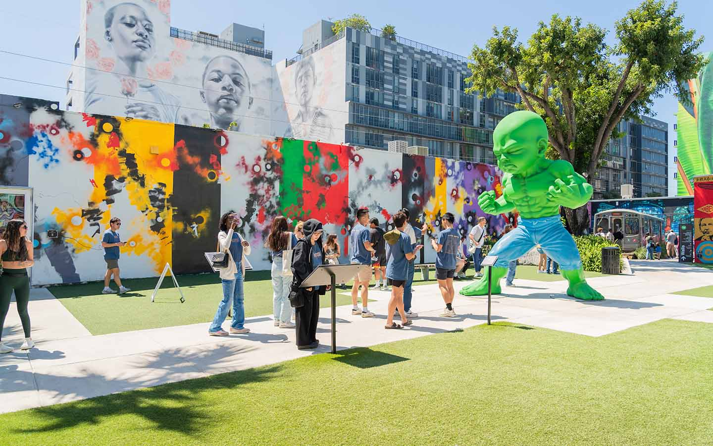

<meta charset="UTF-8">
<section id="history-page">
    <h2>Miami: 128 Years of History</h2>
    <header>
        <div class="logo">
            <a href="index.html">MIAMI HISTORY</a>
        </div>
        <nav>
            <ul>
                <li><a href="index.html">Home</a></li>
                <li><a href="history.html" class="active">Timeline</a></li>
                <li><a href="gallery.html">Gallery</a></li>
            </ul>
        </nav>
    </header>
    <div class="zigzag-container">
        <div class="zigzag-item">
            <div class="text"><h3>1896 — The Beginning</h3><p>Джулія Таттл і залізниця.</p></div>
            <div class="image"></div>
        </div>


        <div class="zigzag-item">
            <div class="text"><h3>1920s — Art Deco Boom</h3><p>Будівництво готелів на Ocean Drive.</p></div>
            <div class="image"></div>
        </div>


        <div class="zigzag-item">
            <div class="text"><h3>1959 — Cuban Influence</h3><p>Поява району "Маленька Гавана" через еміграцію.</p></div>
            <div class="image"></div>
        </div>


        <div class="zigzag-item">
            <div class="text"><h3>1980s — Pop Culture Era</h3><p>Серіал "Miami Vice" та новий імідж міста.</p></div>
            <div class="image"></div>
        </div>


        <div class="zigzag-item">
            <div class="text"><h3>2010s — Art & Tech</h3><p>Перетворення району Wynwood на галерею просто неба.</p></div>
            <div class="image"></div>
        </div>
        <link href="https://fonts.googleapis.com/css2?family=Montserrat:wght@400;700&display=swap" rel="stylesheet">
        <link rel="stylesheet" href="style.css">

    </div>

</section>
<footer>
    <p>&copy; 2024 Історія Маямі. Всі права захищені.</p>
</footer>